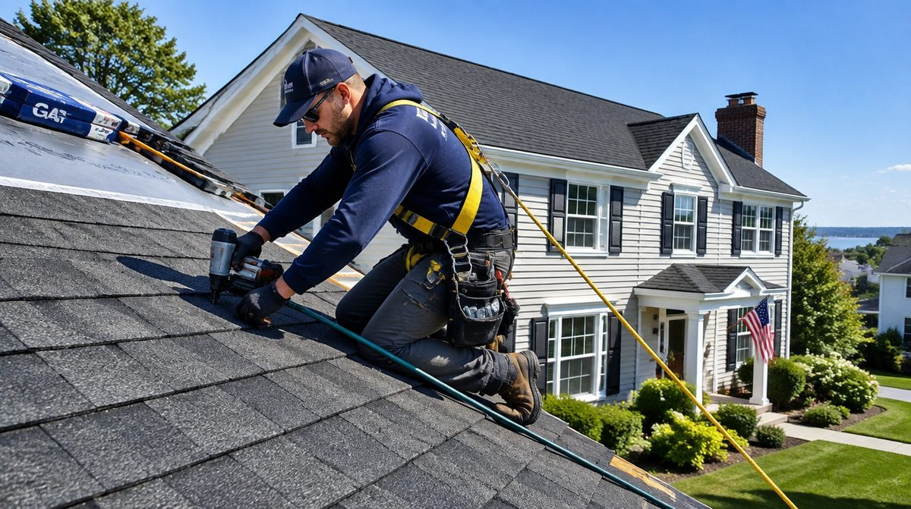
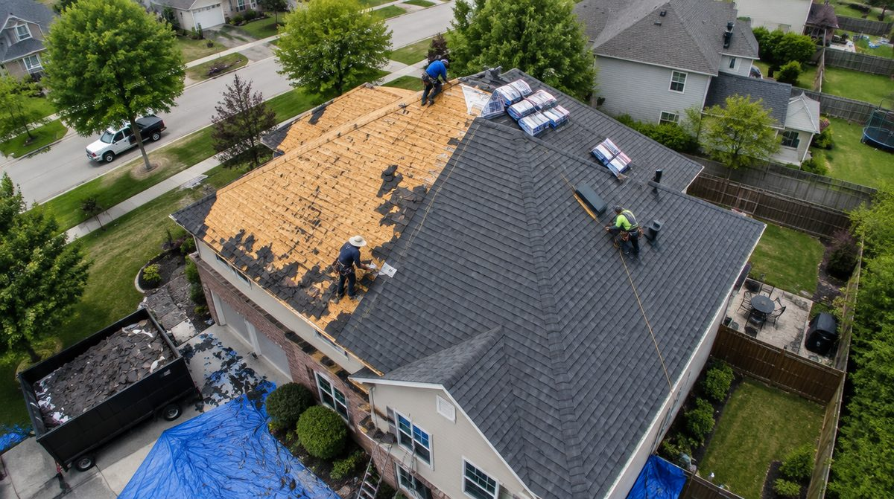

Roofing
Roof repairs, replacements, and storm damage restoration for Long Island homes.

Roof repairs, replacements, and storm damage restoration for Long Island homes.
What's Included
Your roof is your home's first line of defense. T-Force provides complete residential roofing services — from patching a few missing shingles to full tear-off and replacement. We inspect the entire roof system, identify the real problem, and give you honest options.

Common Problems We Solve
Brown spots on ceilings, drips during rain, or wet attic insulation. We trace the leak to its source and fix it — not just the symptom.
Wind, age, and storms lift and crack shingles. Even a few missing shingles expose the underlayment to water damage.
Long Island storms bring wind, hail, and debris. We assess the damage, document it for insurance, and handle the repair or replacement.
Most asphalt shingle roofs last 20 to 25 years. If yours is curling, granule loss is heavy, or leaks are recurring, it may be time for a full replacement.
Why Choose T-Force
We don't just replace shingles. We inspect decking, underlayment, flashing, ventilation, and gutters — the entire roof system.
If a repair will hold, we'll tell you. If the roof needs replacement, we'll explain why. No pressure, just facts.
Tarps on landscaping, magnetic nail sweeps, and thorough debris removal. Your yard looks the same when we leave.
Frequently Asked Questions
Get a free, no-obligation estimate for your project.
(516) 521-9815Tell us about your roofing needs.